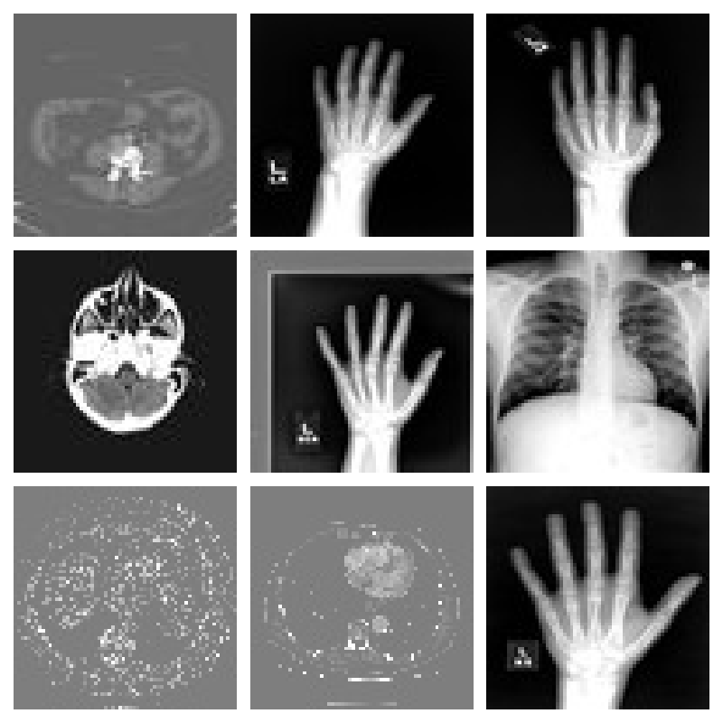
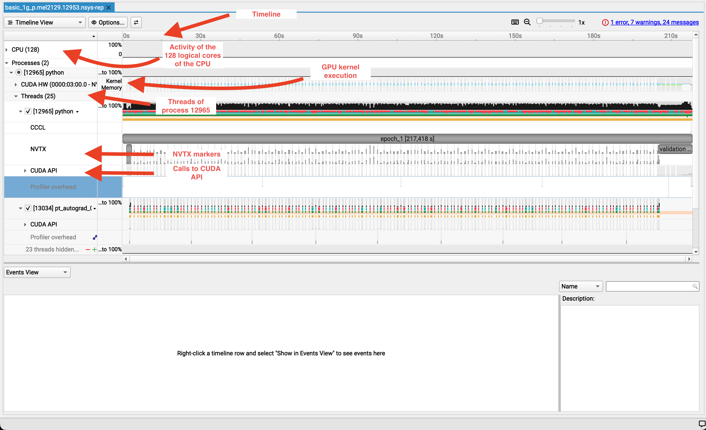
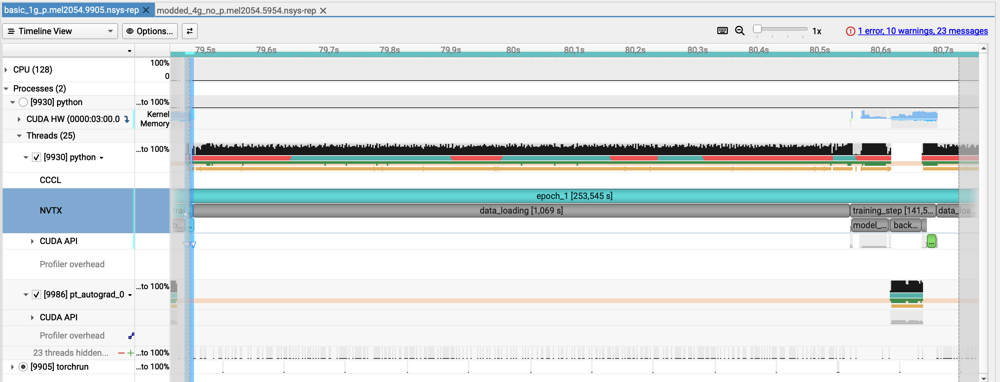
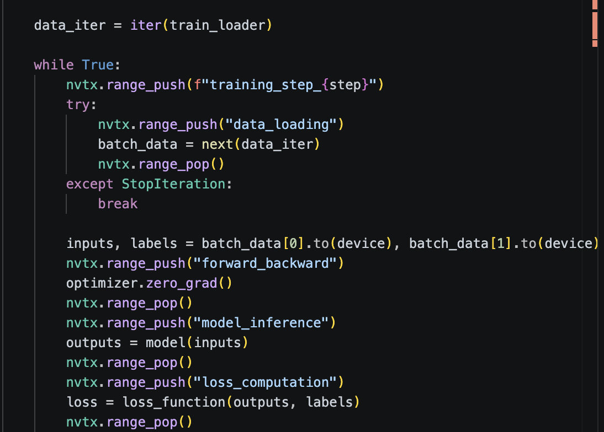
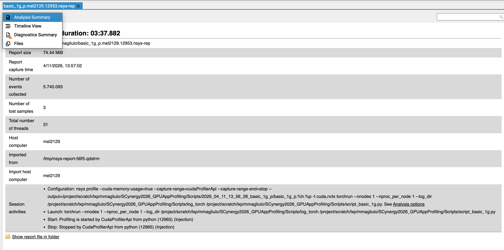
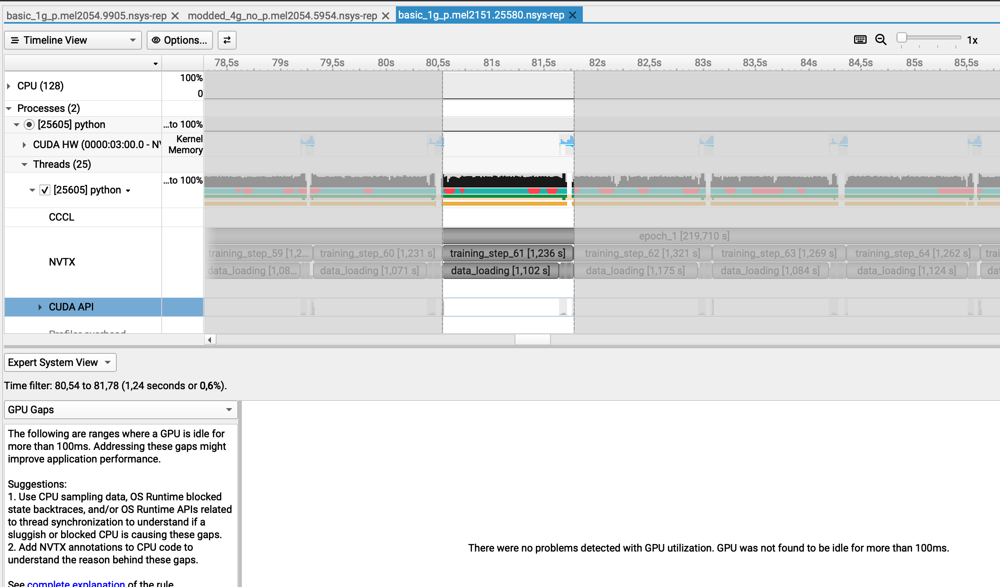
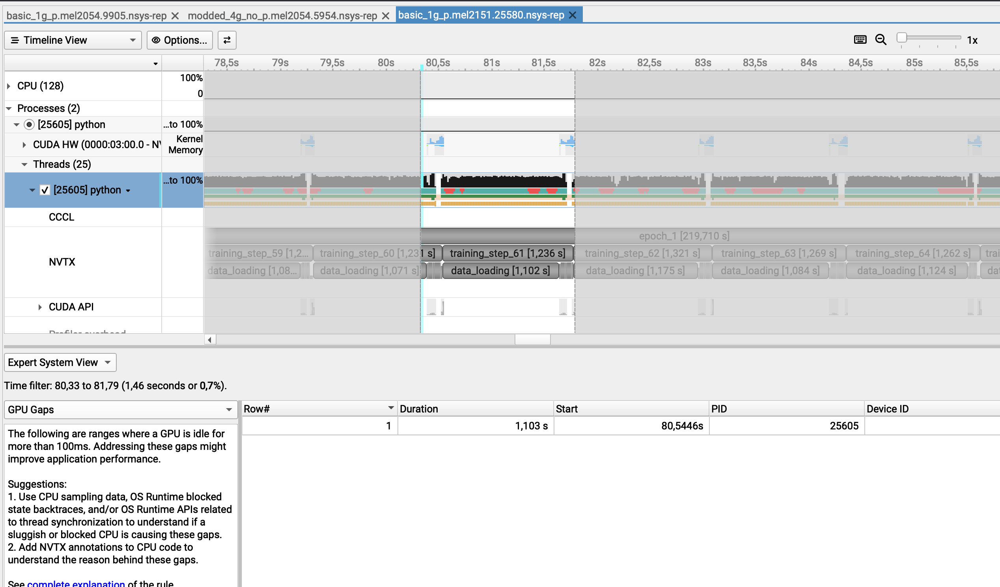

GPU Profiling on MeluXina¶
Intro¶
Why measure and profile GPU code?¶
Wall‑clock runtime alone doesn’t explain why a job is slow. GPU programming adds complexity:
- Host ↔ device transfers
- Kernel launches and occupancy
- Memory hierarchy (global / shared / L2 / registers)
- NCCL communication
- CPU-side bottlenecks such as data loading and preprocessing
Profiling helps reveal where time is actually spent and what is limiting performance.
Typical Key Questions Answered via Profiling¶
Profiling helps identify where time and resources are actually spent during execution. Common questions it can answer include:
- CPU - I/O Bottlenecks: Is the GPU frequently idle while waiting for data loading, preprocessing, or host-side work?
- Compute vs. Memory Behavior: Is application performance limited by computational throughput, or by memory bandwidth and data movement?
- Multi‑GPU Scaling (when applicable): Are all GPUs and ranks doing comparable amounts of work, or is load imbalance reducing scalability?
- Synchronization Overhead: Are MPI, NCCL operations, or synchronization barriers causing GPUs to stall or wait unnecessarily?
- Kernel Launch Overhead: Is performance affected by launching many small or short-lived kernels?
- GPU Utilization and Occupancy: Are register pressure, shared memory usage, or low occupancy limiting available parallelism?
Note: Investigating per‑kernel occupancy and resource usage requires Nsight Compute, which is out of scope for today.
Usual workflow¶
- You identified a possible performance issue with time-consuming app/workflow
- Reproduce the problem with a shorter test case
- Run your Profiler on this smaller test case
- Analyze the timeline, Identify top time consumers
- Formulate hypotheses → apply changes → re‑profile
- Repeat until performance is satisfactory
NVIDIA Nsight tool family¶
Today, we will focus on Nsight Systems
NVIDIA Nsight Systems is a system‑wide performance analysis tool that provides a unified timeline of CPU, GPU, CUDA, and OS activity.
Rule of thumb¶
- Nsight Systems
- System‑wide timeline (CPU, GPU, MPI, I/O)
- Good for: “Where is the time going?”
- Nsight Compute
- Kernel‑level analysis and metrics
- Good for: “Why is this kernel so slow?”
High-level workflow when using Nsight-Systems¶
Two main steps:
- Producing a trace with Nsight-Systems (
.nsys-repextension) - Post-process the output with the Nsight-Systems GUI and its command line tools to analyze this trace
Opening your first trace¶
Today's workshop is about a MonAI model training
More specifically, we will work on the training of a classification model aimed at classifying medical images:

First step: setting up the environment¶
Open a terminal in your OOD session and run:
cd /project/home/p201259/workspaces/$USER/Scynergy2026-GPUApplicationProfiling/
cd Scripts
source setup_environment.sh
This will create and configure a python virtual environment as well as environment variables that will be used all along this training.
Second step: Using nsys-ui to open the trace¶
Once the profiling is done, NSight generates a trace that has the .nsys-rep extension.
We are going to analyze such a trace.
- Here we look at the trace corresponding to the code
Scripts/script_basic_1g.py - This is what you would get from a "naive" training code running on one GPU only

Let's have a closer look¶

Zoom on a part of the timeline¶
Hover your mouse over a region of interest by keeping the left button of your mouse pressed.

Right click and select "Filter and Zoom in"

Look at the timeline!

Zooming further¶
Only select one repetition of the pattern we see all along the epoch and let's have a look

Identifying the culprit¶

Let's see the associated lines in the code.
cd /project/home/p201259/workspaces/$USER/Scynergy2026-GPUApplicationProfiling/
vi Scripts/script_basic_1g.py

First observations¶
From the screenshot alone:
- ⚠️ GPU utilization is low
- ⚠️GPU memory usage is stable but minimal
- ⚠️ Most work runs on the default stream
- ⚠️ Limited concurrency between CPU and GPU
- ✅ CPU is active (not idle)
- ⚠️ Large GPU gaps between training steps
- ❌ Data loading is the dominant bottleneck
Side note¶
In the GUI, you can select the analysis summary allows you to retrieve which command line you used to obtain the trace. -> This can be very handy if you have generated a lot of traces during your experiments

Let's dig into the command to generate the trace¶
NSYS_OPTIONS="--cuda-memory-usage=true \
--capture-range=cudaProfilerApi \
--capture-range-end=stop \
--output=${output_file} \
-t cuda,nvtx"
--cuda-memory-usage: Tracks VRAM footprint--capture-range=cudaProfilerApi: Only profiles the code betweenstart()andstop()calls in the python code (see below for more details)--output: Defines the path for the.nsys-repfile.-t cuda: Traces GPU kernels, memory copies, and API calls.-t nvtx: Traces user-defined code annotations (e.g., "Epoch 1", "Optimizer").
NVTX annotations allow you to label phases of your application (e.g. data loading, forward pass, backward pass), making both the GUI timeline and CLI reports much easier to interpret.
Example of snippet:
nvtx.range_push("data_loading")
# simulate / perform data loading
inputs = torch.randn(32, 3, 224, 224, device="cuda")
targets = torch.randint(0, 10, (32,), device="cuda")
nvtx.range_pop()
or even better with context managers (more readable):
import torch
import torch.cuda.nvtx as nvtx
from contextlib import contextmanager
@contextmanager
def nvtx_range(name):
nvtx.range_push(name)
try:
yield
finally:
nvtx.range_pop()
with nvtx_range("training_step"):
with nvtx_range("data_loading"):
inputs = torch.randn(32, 3, 224, 224, device="cuda")
targets = torch.randint(0, 10, (32,), device="cuda")
Only profile what is needed (when possible)¶
Those 2 flags:
in conjunction with these functions in your python script:
import torch.cuda.profiler as profiler
profiler.start()
...
profiler.stop()
```
allow us to profile only what we need !
In our case here we skip:
- the import part
- what is outside the training loop (could be the testing phase for example)
#### Other useful options
For collection, you can also reduce trace size and overhead with `--delay` and/or `--duration`
> **Once `nsys profile` is done**, you obtain a trace. It has the `.nsys-rep` format
## Nsight Systems CLI
- once you have your `.nsys-rep`, you can also use the CLI to post-process the profiling output
- `nsys` can post-process existing `.nsys-rep` or SQLite results using `stats`, `analyze`, `export`, and `recipe`
### Main commands
- `nsys stats` → generate statistical summaries
- `nsys analyze` → generate an expert-systems report --> those are actually quite easy to understand and can be very helpful for the big-picture of the problems in your code execution
#### `nsys stats`
```bash
nsys stats $TRACE_1GPU_BASE
nsys statsis the quickest way to get useful text summaries from a saved report.- It accepts either
.nsys-repor SQLite input.
Example¶
We can filter by nvtx range which is very handy to only focus on a nvtx range
$ nsys stats --force-overwrite --filter-nvtx=training_step/10 $TRACE_1GPU_BASE
NOTICE: Existing SQLite export found: single_gpu_base.sqlite
It is assumed file was previously exported from: single_gpu_base.nsys-rep
Consider using --force-export=true if needed.
Processing [single_gpu_base.sqlite] with [/mnt/tier2/apps/USE/easybuild/release/2025.1/software/Nsight-Systems/2025.3.1/host-linux-x64/reports/nvtx_sum.py](nvtx=training_step/10)...
** NVTX Range Summary (nvtx_sum):
Time (%) Total Time (ns) Instances Avg (ns) Med (ns) Min (ns) Max (ns) StdDev (ns) Style Range
-------- --------------- --------- ----------------- ----------------- --------------- --------------- ----------- ------- -----------------
99.0 674,481,948,315 1 674,481,948,315.0 674,481,948,315.0 674,481,948,315 674,481,948,315 0.0 PushPop :epoch_1
0.5 3,395,466,394 1 3,395,466,394.0 3,395,466,394.0 3,395,466,394 3,395,466,394 0.0 PushPop :training_step
0.5 3,088,019,032 1 3,088,019,032.0 3,088,019,032.0 3,088,019,032 3,088,019,032 0.0 PushPop :data_loading
0.0 161,093,381 1 161,093,381.0 161,093,381.0 161,093,381 161,093,381 0.0 PushPop :model_inference
0.0 123,023,037 1 123,023,037.0 123,023,037.0 123,023,037 123,023,037 0.0 PushPop :backward_pass
0.0 8,343,032 1 8,343,032.0 8,343,032.0 8,343,032 8,343,032 0.0 PushPop :optimizer_step
0.0 1,868,965 1 1,868,965.0 1,868,965.0 1,868,965 1,868,965 0.0 PushPop :forward_backward
0.0 1,716,235 1 1,716,235.0 1,716,235.0 1,716,235 1,716,235 0.0 PushPop :loss_computation
BUT ... unfortunately the "parent" nvtx ranges are taken into account in the computations of the relative time.
⚠️ Important: Parent NVTX ranges are included in relative time calculations, which can skew percentages when nested ranges are used.
Here we have all the reports that are generated but we can ask for some specific ones.
For most GPU/HPC work, I’d start with these:
nsys stats --report nvtx_sum→ phase-level timing from your annotationsnsys stats --report cuda_gpu_mem_time_sum→ How much GPU time is being spent on memory operations instead of kernels?nsys stats --report cuda_gpu_kern_sum:base→ tells you where GPU compute time goesnsys stats --report cuda_kern_exec_sum:base→ tells you more than just kernel runtime: it summarizes the full launch-to-execution path for each kernel launch, including API time, queue time, kernel time, and total timensys stats --report cuda_api_sum→ CPU launch/API overheadnsys stats --report osrt_sum→ time blocked in host runtime/syscalls (for this one you must usensys profile -t osrt)nsys stats --report cuda_gpu_trace→ an event-by-event trace view for GPU-side CUDA work: instead of aggregating by kernel name like a summary report, it lists individual CUDA kernels and memory operations in time order.
You can have a great control over what you want to measure from the command line. For instance, if you want to have a look at the 10 most time-consumer CUDA kernel
$ nsys stats --quiet --force-overwrite --filter-nvtx=training_step/10 --report cuda_gpu_trace --format csv --output - single_gpu_base.nsys-rep | python3 -c '
import csv, sys
rows = list(csv.DictReader(sys.stdin))
print(rows)
rows.sort(key=lambda r: float(r["Duration (ns)"]), reverse=True)
w = csv.DictWriter(sys.stdout, fieldnames=rows[0].keys())
w.writeheader()
w.writerows(rows[:10])
' > top10_cuda_gpu_trace.csv
Multiple reports and machine-readable output¶
You can generate multiple reports at once:
nsys stats \
--report cuda_gpu_trace \
--report cuda_gpu_kern_sum \
--report cuda_api_sum \
--format csv,column \
--output .,- \
report.nsys-rep
GOTCHAS¶
Missed GPU gaps

Strangely enough, a GPU gap is detected only if the selected range is between two GPU utilization chunks
Here I selected another chunk where the GPU is being used and the GPU gap is detected...

However, if I generate a report from the command line, this can be really misleading as we totally miss that the GPU is idle
Example
$ nsys analyze --filter-nvtx=training_step_67 --rule gpu_gaps basic_1g_p.mel2151.25580.nsys-rep
NOTICE: Existing SQLite export found: basic_1g_p.mel2151.25580.sqlite
It is assumed file was previously exported from: basic_1g_p.mel2151.25580.nsys-rep
Consider using --force-export=true if needed.
Processing [basic_1g_p.mel2151.25580.sqlite] with [/mnt/tier2/apps/USE/easybuild/release/2025.1/software/Nsight-Systems/2025.3.1/host-linux-x64/rules/gpu_gaps.py](nvtx=training_step_67)...
** GPU Gaps (gpu_gaps):
There were no problems detected with GPU utilization. GPU was not found to be
idle for more than 500ms.
Processing [basic_1g_p.mel2151.25580.sqlite] with [/mnt/tier2/apps/USE/easybuild/release/2025.1/software/Nsight-Systems/2025.3.1/host-linux-x64/rules/gpu_time_util.py](nvtx=training_step_67)...
As you can see we get:
GPU Gaps (gpu_gaps):
There were no problems detected with GPU utilization. GPU was not found to be
idle for more than 500ms.